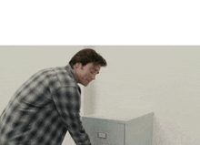
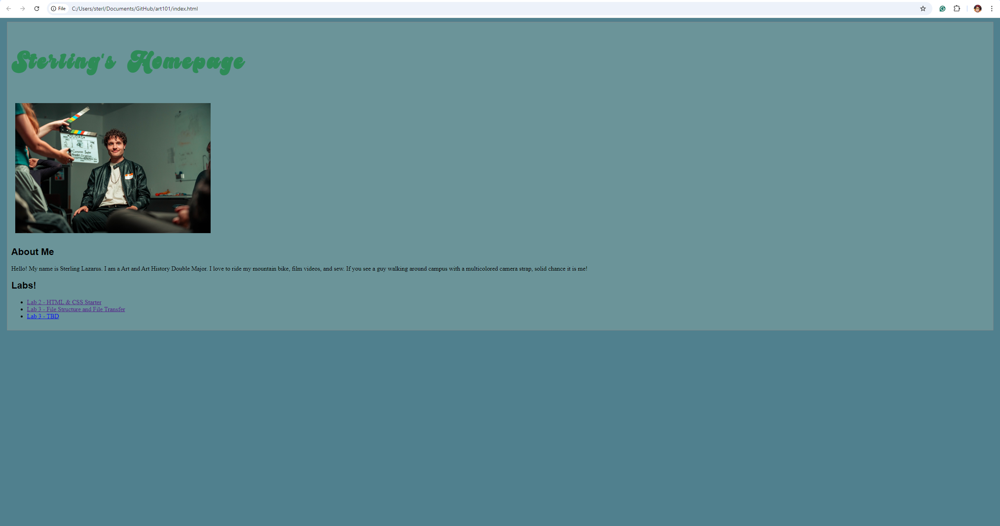
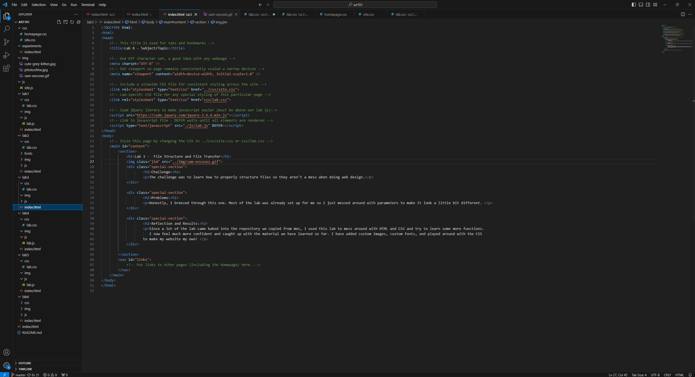
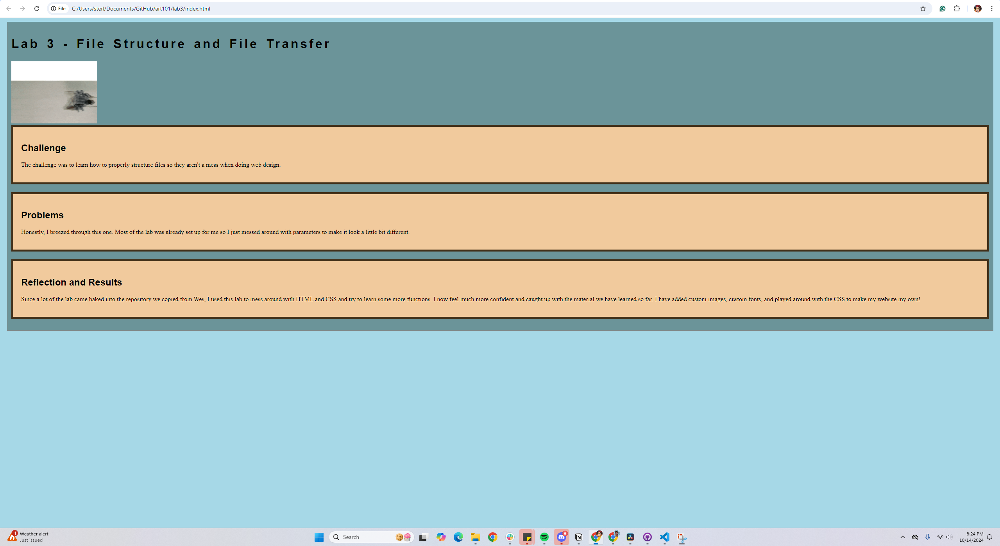

Lab 3 - File Structure and File Transfer
Challenge
The challenge was to learn how to properly structure files so they aren't a mess when doing web design.
Problems
Honestly, I breezed through this one. Most of the lab was already set up for me so I just messed around with parameters to make it look a little bit different.
Reflection and Results
Since a lot of the lab came baked into the repository we copied from Wes, I used this lab to mess around with HTML and CSS and try to learn some more functions. I now feel much more confident and caught up with the material we have learned so far. I have added custom images, custom fonts, and played around with the CSS to make my website my own!
Here is my HTML in the text editor!
Here is my HTML in the browser!
Here is my HTML in the text editor!
Here is my HTML in the browser!